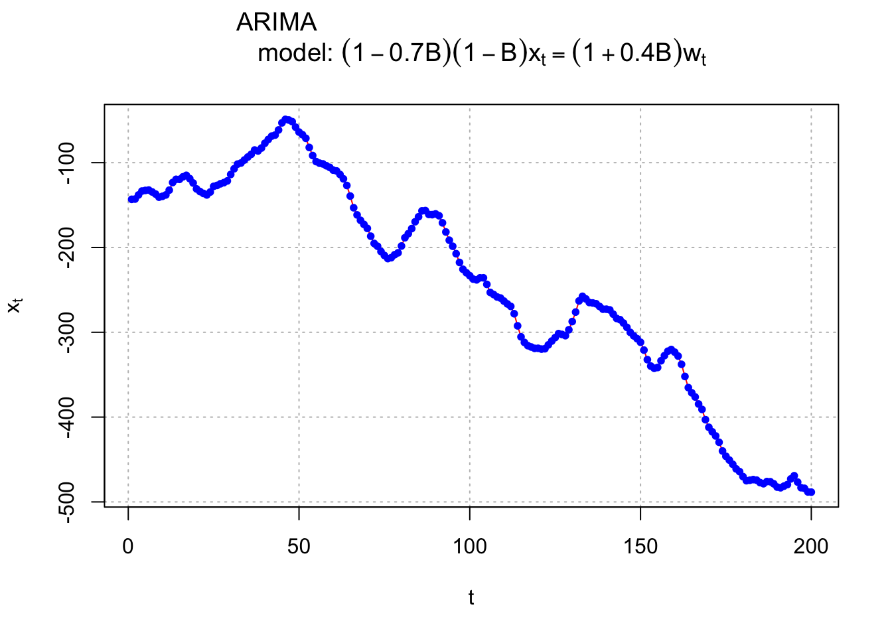
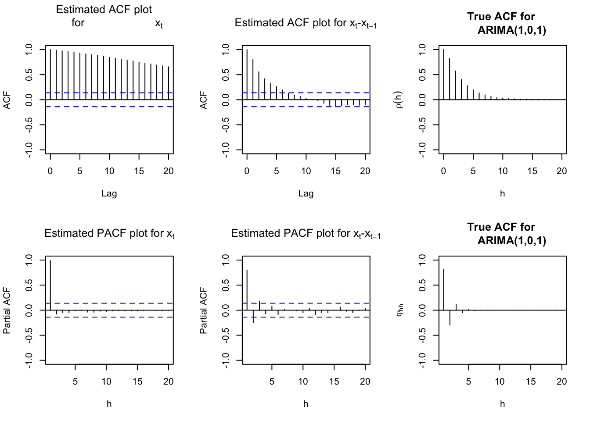
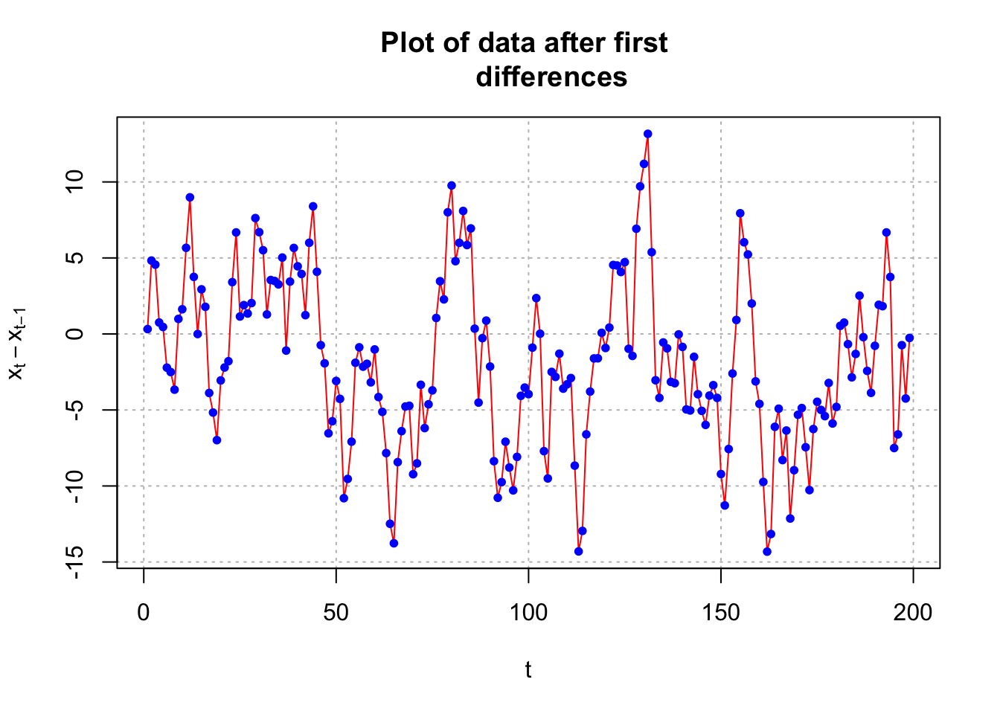

Chapter 13 Integrated Models for Nonstationary Data
We have assumed that \(x_t\) is stationary so far. What if \(x_t\) is not stationary in the mean? Use differencing to make a transformation stationary in the mean.
Autoregressive Integrated Moving Average model
- ARIMA(p,d,q) – p is AR order, d is differencing order, and q is MA order
- \(\phi(B)(1-B)^dx_t = \theta(B)w_t\) where \(w_t \sim ind. N(0,\sigma_w^2)\)
- Let \((1-B)^dx_t = y_t.\) Then \(\phi(B)y_t = \theta(B)w_t\) is an ARMA(p,q) model.
- The “integrated” name results from transforming back from the \(y_t\) to \(x_t\) by “integrating” (put together) or “summing” the \(y_t\)’s. With first differences, we have \[\sum_{k=1}^{t}y_k=\sum_{k=1}^{t}x_k-x_{k-1}=x_t-x_0=x_t\] if \(x_0=0\)
Because higher order differencing is the result of continuing to apply first differencing, the same process would be done in those cases.
Example 13.1 ARIMA(1,1,1) with \(\phi_1=0.7, \theta_1=0.4, \sigma_w^2=9, n=200\) (arima111_sim.R)
\(\phi(B)(1-B^d)x_t=\theta(B)w_t,\) where \(w_t \sim ind.N(0.9)\)
This can be rewritten as
\[(1-\phi_1B)(1-B)x_t=(1+\theta_1B)w_t\\ \iff (1-\phi_1B)(x_t-x_{t-1})=(1+\theta_1B)w_t\\ \iff x_t-x_{t-1}-\phi_1x_{t-1}+\phi_1x_{t-2}=w_t+\theta_1w_{t-1}\\ \iff x_t=(1+\phi_1)x_{t-1}-\phi_1x_{t-2}+w_t+\theta_1w_{t-1}\]
Using the above representation with only \(x_t\) on the left side, one could use the for loop to simulate observations from this model. Instead, one can use arima.sim() to do it as follows,
#Data could be simulated using the following code - notice the use of the order option.
set.seed(6632)
x <- arima.sim(model = list(order=c(1,1,1), ar=0.7, ma=0.4), n=200, rand.gen=rnorm, sd=3)Notice the addition of the order option to specify p, d, and q.
I had already simulated observations from the model in the past and put them in the comma delimited file. I am going to use this data for the rest of the example.
arima111 <- read.csv(file = "arima111.csv")
head(arima111)## time x
## 1 1 -143.2118
## 2 2 -142.8908
## 3 3 -138.0634
## 4 4 -133.5038
## 5 5 -132.7496
## 6 6 -132.2910tail(arima111)## time x
## 195 195 -469.1263
## 196 196 -476.6298
## 197 197 -483.2368
## 198 198 -483.9744
## 199 199 -488.2191
## 200 200 -488.4823x <- arima111$x#Plot of the data
# dev.new(width = 8, height = 6, pointsize = 10)
par(mfrow = c(1,1))
plot(x = x, ylab = expression(x[t]), xlab = "t", type =
"l", col = "red", main = expression(paste("ARIMA
model: ", (1 - 0.7*B)*(1-B)*x[t] == (1 + 0.4*B)*w[t])),
panel.first = grid(col = "gray", lty = "dotted"))
points(x = x, pch = 20, col = "blue")
#ACF and PACF of x_t
#dev.new(width = 8, height = 6, pointsize = 10)
par(mfcol = c(2,3))
acf(x = x, type = "correlation", lag.max = 20, ylim =
c(-1,1), main = expression(paste("Estimated ACF plot
for ", x[t])))
pacf(x = x, lag.max = 20, ylim = c(-1,1), xlab = "h",
main = expression(paste("Estimated PACF plot for ",
x[t])))
#ACF and PACF of first differences
acf(x = diff(x = x, lag = 1, differences = 1), type =
"correlation", lag.max = 20, ylim = c(-1,1), main =
expression(paste("Estimated ACF plot for ", x[t],"-",x[t-1])))
pacf(x = diff(x = x, lag = 1, differences = 1), lag.max
= 20, ylim = c(-1,1), xlab = "h", main =
expression(paste("Estimated PACF plot for ", x[t],"-",x[t-1])))
#True ACF and PACF for ARIMA(1,0,1) (without differences)
plot(y = ARMAacf(ar = 0.7, ma = 0.4, lag.max = 20), x =
0:20, type = "h", ylim = c(-1,1), xlab = "h", ylab =
expression(rho(h)), main = "True ACF for
ARIMA(1,0,1)")
abline(h = 0)
plot(x = ARMAacf(ar = 0.7, ma = 0.4, lag.max = 20, pacf
= TRUE), type = "h", ylim = c(-1,1), xlab = "h", ylab
= expression(phi1[hh]), main = "True ACF for
ARIMA(1,0,1)")
abline(h = 0)
#Plot of the first differences
#dev.new(width = 8, height = 6, pointsize = 10)
par(mfrow = c(1,1))
plot(x = diff(x = x, lag = 1, differences = 1), ylab =
expression(x[t] - x[t-1]), xlab = "t", type = "l", col
= "red", main = "Plot of data after first
differences", panel.first = grid(col = "gray", lty =
"dotted"))
points(x = diff(x = x, lag = 1, differences = 1), pch =
20, col = "blue")
Notes:
- The \(x_t vs. t\) plot shows characteristics of a nonstationary in the mean time series.
- The ACF plot shows very large autocorrelations. Remember that this is a characteristic of a nonstationary in the mean time series.
- After first differences, the ACF and PACF look like the ACF and PACF from an ARMA(1, 1) with \(\phi_1 = 0.7\) and \(\theta_1 = 0.4\). The plot of the first differences themselves now look like a sample from a stationary process.
- While we have not talked about how to estimate model parameters, we can still take a quick look at what if the parameters are estimated. The
arima()function in R can do it.
# Fit model
mod.fit <- arima(x=x, order=c(1,1,1))
mod.fit##
## Call:
## arima(x = x, order = c(1, 1, 1))
##
## Coefficients:
## ar1 ma1
## 0.6720 0.4681
## s.e. 0.0637 0.0904
##
## sigma^2 estimated as 9.558: log likelihood = -507.68, aic = 1021.36These estimates are relatively close to the values used in arima.sim()!
#Covariance matrix
mod.fit$var.coef## ar1 ma1
## ar1 0.004060990 -0.003341907
## ma1 -0.003341907 0.008175261 #Test statistic for Ho: phi1 = 0 vs. Ha: phi1 ≠ 0
z <- mod.fit$coef[1]/sqrt(mod.fit$var.coef[1,1])
z## ar1
## 10.54508 2*(1-pnorm(q = z, mean = 0, sd = 1))## ar1
## 0 #Test statistic for Ho: theta1 = 0 vs. Ha: theta1 <> 0
z <- mod.fit$coef[2]/sqrt(mod.fit$var.coef[2,2])
z## ma1
## 5.177294 2*(1-pnorm(q = abs(z), mean = 0, sd = 1))## ma1
## 2.251269e-07 # confidence interval
confint(object = mod.fit, level = 0.95)## 2.5 % 97.5 %
## ar1 0.5470940 0.7968949
## ma1 0.2909019 0.6453306#Shows how to use the xreg option
# dev.new(width = 8, height = 6, pointsize = 10)
arima(x = x, order = c(1, 1, 1), xreg = rep(x = 1, times = length(x)))##
## Call:
## arima(x = x, order = c(1, 1, 1), xreg = rep(x = 1, times = length(x)))
##
## Coefficients:## Warning in sqrt(diag(x$var.coef)): NaNs produced## ar1 ma1 rep(x = 1, times = length(x))
## 0.6720 0.4681 -243.5336
## s.e. 0.0637 0.0904 NaN
##
## sigma^2 estimated as 9.558: log likelihood = -507.68, aic = 1023.36